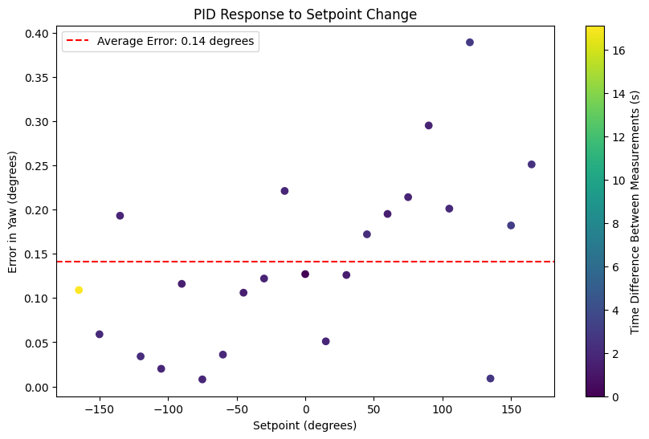
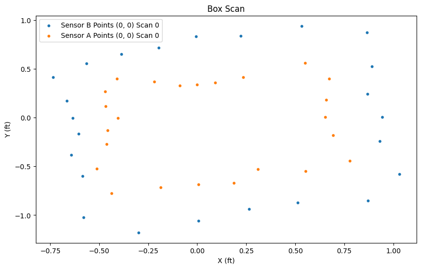

OK But We're Rotated Correctly Right?
Angular PID Accuracy
To test the accuracy of the angular PID loop, I ran the rotation code above to turn it 360 degrees in 15 degree increments and then use the onboard IMU to measure the actual angle of the car. I found that the angular PID loop was able to rotate the car to the desired angle with a maximum error of about 0.4 degrees and an average error of 0.14 degrees. The plot of this test is shown below. The colors of the points coordinate to the time it took for the car to rotate to the desired angle. The median time it took for the car to rotate to the desired angle was 1.8 seconds, but the maximum was 20 seconds. This was due to the car getting stuck at 180 degrees since it would oscillate between 179 and -179 degrees without ever settling at a close enough angle to be considered "at the setpoint", and then timing out. However, that only happened once during the 5 scans of the map. In that case, we wouldn't take the data point from 180 degrees.

From this, we can assume that if we were in the center of a 4x4m room, the maximum error in the position of the car due to the angular PID loop would be about 0.05 mm (cos(0.4) * 2m). However, this is a very small error and is negligible compared to the noise in the distance measurements from the ToF sensor, which has a standard deviation of about 20 mm. Additionally, as the robot moves, it doesn't turn directly on axis. Below is a video of the robot turning 360 degrees in place to show that it relatively does turn on axis, but there is some small amount of translation that occurs during the rotation. This would cause the map of the box to look jagged instead of perfectly rectangular. Below is also a plot of the distance measurements of the robot turning around in the tiny box in the world map.

